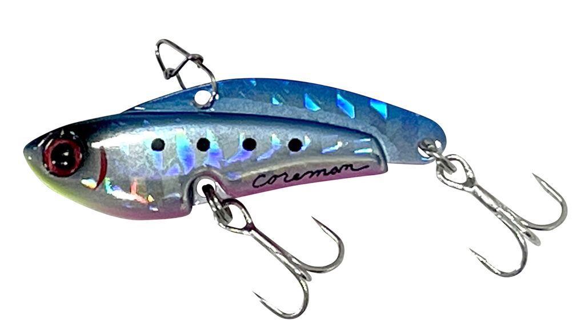
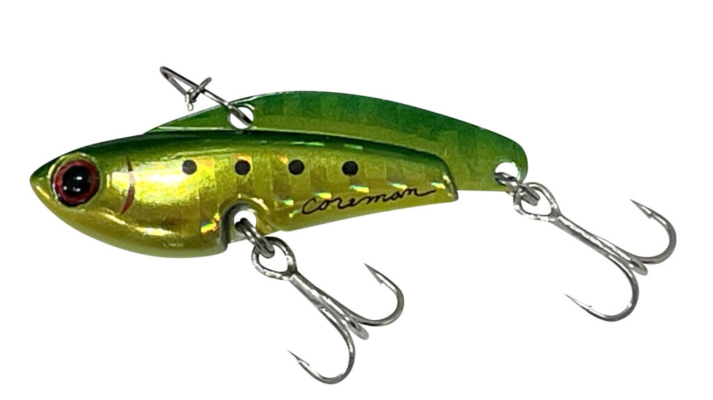
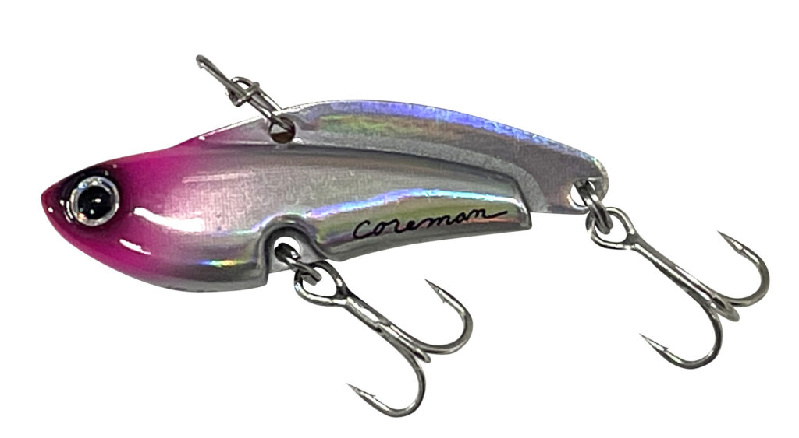
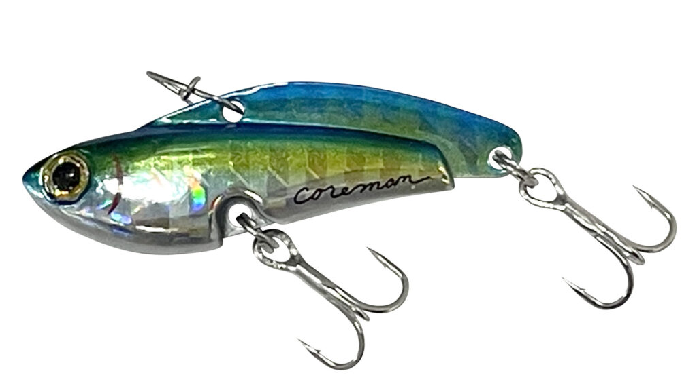
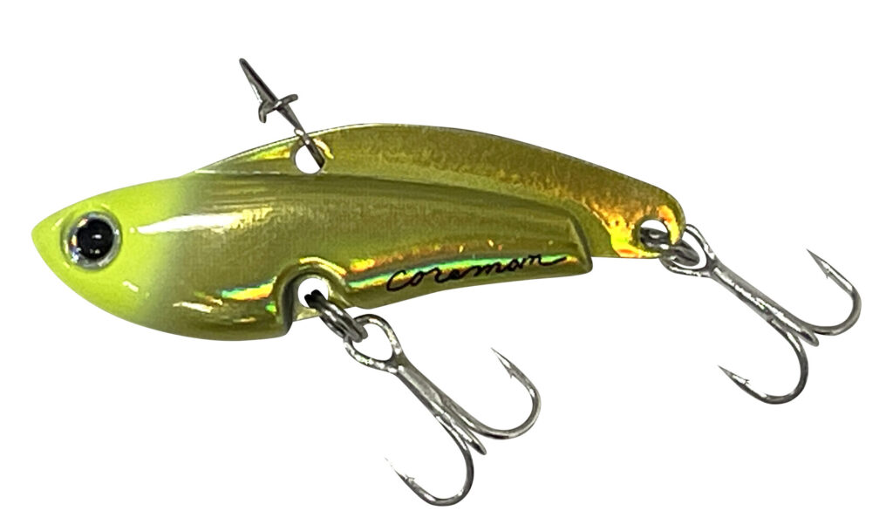
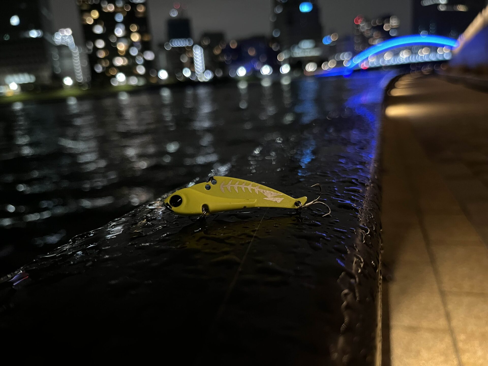
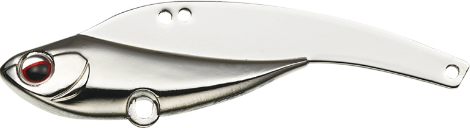

IP-10 アイアンプレート ハイ&ロー
（IP-10 IRONPLATE HIGH&LOW）
IP-10 アイアンプレート ハイ&ロー（IP-10 IRONPLATE HIGH&LOW）はCOREMAN（コアマン）の鉄板バイブレーションです。
アイアンプレートのテールをカットしたショートボディの小型鉄板バイブです。
40mm・10gのコンパクトなボディで、表層（ハイ）と底（ロー）のレンジを攻めるのが得意。小さいベイトを食べているシーバスに合わせやすいサイズです。

画像出典:コアマン公式HP
スペック
- メーカー
- COREMAN（コアマン）
- タイプ
- シンキング（鉄板バイブレーション）
- 全長
- 40mm
- 重量
- 10g
- フック
- がまかつ トレブル13 #12
- リング・スナップ
- コアマンオリジナルリング #1・コアマンスナップ #00
- カラー
- 全8色
- ターゲット
- シーバス
- 価格
- 1,540円（税込）
▼今すぐチェック

IP-10 アイアンプレート ハイ&ローの特徴
ショートボディで、表層と底を攻める小型の鉄板
-
テールをカットしたショートボディ
アイアンプレートのテールを短くしたボディで、40mmのコンパクトなシルエット。小さいベイトを食べているシーバスにも口を使わせやすい。
-
表層（ハイ）と底（ロー）が得意
名前のとおり、表層を速めに巻くハイと、底付近を探るローの両方のレンジで使える。
-
10gで扱いやすい
10gの重さで、港湾や河川の近〜中距離を軽いタックルでも投げやすい。
IP-10 アイアンプレート ハイ&ローの使い方
表層を狙う時は、着水後すぐに巻き始めて、浮き上がらせながらただ巻きで引きます。
底を狙う時は、着底させてから巻き始めたり、リフト＆フォールで底付近を探ったりします。小さいので、流れに乗せて引くのも効果的です。
IP-10 アイアンプレート ハイ&ローの得意な状況
シーバスがマイクロベイトや小さいイワシ・ハクを食べている時に向いています。
港湾や河川の明暗、ちょっとした流れの中など、小さいルアーで探りたい場面で使いやすいサイズです。
マイクロベイトを食べている時でも、小さいシルエットで釣れる鉄板バイブです。
ワンポイント
公式ページは工事中で、スペックは販売店の情報（全長40mm・10g・税込1,540円）をもとにしています。小さいフック（#12）なので、ドラグは少し弱めにしておくと安心です。
オススメカラー
IP-10は全8色。そのうち4色を紹介します（画像は公式より）。

イワシゴールドゴールドのフラッシングでアピールするイワシ系。

ピンクヘッドピンクの頭で目立つ定番カラー。朝夕マズメに。

キビナゴフラッシュ細身のベイトを意識したフラッシング系。

チャートヘッドチャートの頭で目立つ、濁り潮やローライト向け。
画像出典:コアマン公式HP
▼今すぐチェック
IP-10 アイアンプレート ハイ&ローに似ているルアー
-

タイニー冷音 邪道 詳細はこちら＞10gの小型メタルバイブ。テールが絡みにくい。
-

アイアンマービー55 エバーグリーン 詳細はこちら＞55mm・13.5gでよく飛ぶスモール鉄板バイブ。
-
 アイアンプレートSC IP-26
コアマン
詳細はこちら＞
アイアンプレートSC IP-26
コアマン
詳細はこちら＞
同じアイアンプレートの26g。遠投で広く探りたい時に。